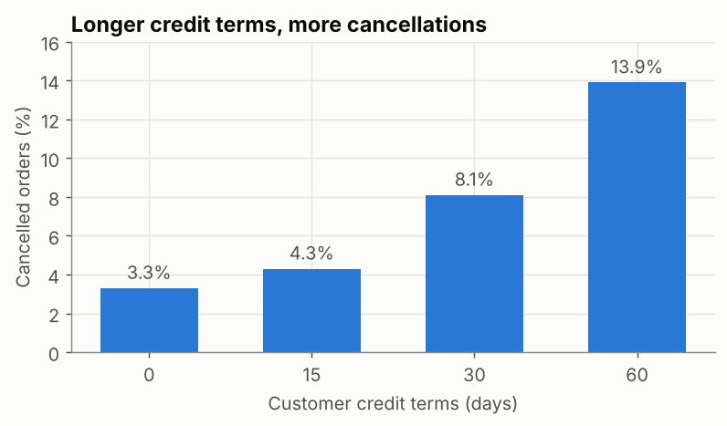
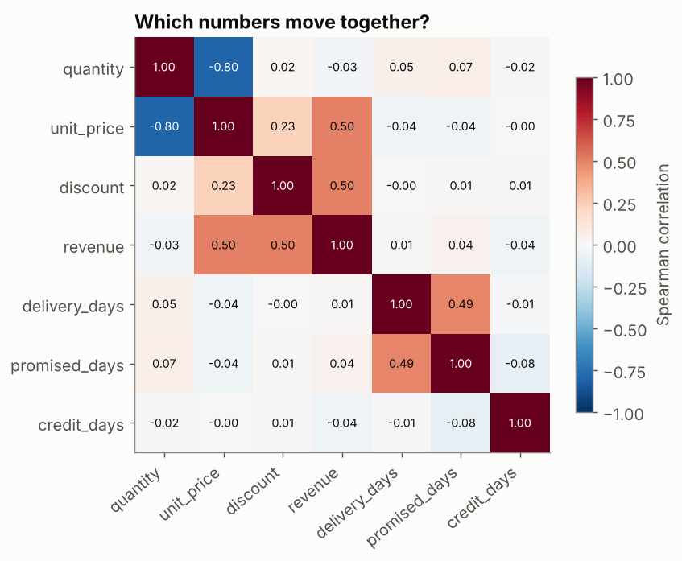
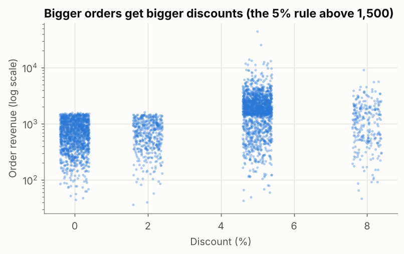

EDA Part 2: Relationships and Anomalies
Measure how variables move together with crosstabs, group rates and correlation, avoid the classic traps, and find anomalies with robust rules — then decide whether each one is an error, an event or a real outlier.
Before you start
EDA Part 1: Analytical Questions, Distributions and Patterns
- data-science-scripts.zipAll 21 Phase 2 lesson scripts (NumPy to research thinking), shared chart style, data folder and solutions · 230 KB
- orders_2025.csv4,246 clean orders for 2025 (synthetic, fixed seed): region, segment, channel, product, price, discount, status, delivery days, revenue · 472 KB
- customers_2025.csv63 customers: segment, region, sign-up date, credit terms · 3 KB
What is it?
| Part | Question | Typical tools |
|---|---|---|
| Relationships | When one variable changes, does another tend to change too? | Crosstab, rate by group, correlation, scatter plot |
| Anomalies | Which values or periods don’t fit the usual pattern, and why? | IQR rule, rolling median, robust z-score, investigation |
Both end with judgement: a relationship is not a cause, and an anomaly is not automatically an error.
Why it matters at work
“What drives cancellations?” and “Is this spike real?” are everyday questions. Answering them well (with the right comparison, the counts behind each rate, and an explanation for every outlier) builds trust. Removing a “weird” value that turns out to be your biggest customer’s real order destroys it.
The script is 10_eda_relationships_anomalies.py. It
joins customers_2025.csv to the orders to bring in each
customer’s credit terms.
Relationship 1: two categories (crosstab)
Which channels does each segment use? Use row percentages, so segments of different sizes compare fairly:
ct = pd.crosstab(df["segment"], df["channel"], normalize="index").mul(100).round(1)
print(ct)channel Phone Portal Sales rep
segment
Garment Factory 14.7 61.4 23.8
Knitting Mill 19.7 50.1 30.2
Retailer 36.0 14.4 49.7
Trader 29.8 23.6 46.6Factories mostly order through the web portal (61%); retailers mostly through sales reps and the phone. Keep this in mind: any “portal effect” is mixed up with “who uses the portal” (see Traps below).
Relationship 2: a category and a rate
Do credit terms relate to cancellations? Show the rate and the count for every group:
rate = df.groupby("credit_days")["cancelled"].agg(["mean", "size"])
rate["mean"] = (rate["mean"] * 100).round(1)
print(rate) mean size
credit_days
0 3.3 1353
15 4.3 880
30 8.1 1366
60 13.9 647
A clear, steady relationship: customers on 60-day credit cancel 4× as often as cash customers. Every group has hundreds of orders, so it’s not noise from a tiny group. It is still a relationship, not proof of cause: maybe riskier customers are the ones given long credit.
Relationship 3: numbers together (correlation)
Correlation (from −1 to +1) measures how consistently two numbers move together. Use Spearman (rank-based) for skewed data like ours; Pearson assumes a straight-line relationship and is pulled around by outliers.
num = net[["quantity", "unit_price", "discount", "revenue", "delivery_days", "promised_days", "credit_days"]]
corr = num.corr(method="spearman").round(2)
print(corr.loc[["revenue", "delivery_days"], ["quantity", "discount", "promised_days", "credit_days"]]) quantity discount promised_days credit_days
revenue -0.03 0.5 0.04 -0.04
delivery_days 0.05 -0.0 0.49 -0.01
How to read it, and why each number needs a business explanation:
| Pair | ρ | Explanation |
|---|---|---|
| quantity – unit_price | −0.80 | Product mix: cheap trims (buttons at 0.04) are bought in thousands, fabric (3.50) in hundreds. Not “higher quantity lowers the price” |
| quantity – revenue | −0.03 | Same mix effect: across different products, quantity says little about value. Within one product it’s strongly positive |
| discount – revenue | 0.50 | A business rule: orders above 1,500 get at least 5% |
| delivery_days – promised_days | 0.49 | Both depend on region: far regions are promised and get longer times |
| credit_days – anything | ≈ 0 | Correlation misses relationships with a yes/no outcome (cancellation): use rates, as above |
Relationship 4: a scatter plot shows the shape
print(net.groupby("discount")["revenue"].median().round(0))discount
0.00 709.0
0.02 722.0
0.05 1822.0
0.08 1141.0
Name: revenue, dtype: float64
The scatter reveals what the 0.50 hides: a hard cut at 1,500. Discounts don’t cause big orders; the discount policy is triggered by big orders. Reading this the wrong way round (“give discounts to grow orders”) would be an expensive mistake.
Traps when reading relationships
| Trap | Example in our data | Defence |
|---|---|---|
| Confounding (a third variable drives both) | Portal orders may look different only because factories use the portal | Compare within groups (portal vs not, per segment) |
| Reverse causation | Big orders → discount, not discount → big orders | Ask which came first; check the business rules |
| Mix effects | quantity vs price is −0.80 across products | Analyse within one product or category |
| Small groups | A 50% rate from 4 orders | Always show counts next to rates |
| Correlation = 0 means no relationship | Credit vs cancellation | Correlation only sees steady, monotonic patterns between numbers |
Anomalies 1: unusually large orders (IQR rule per group)
A value is flagged when it is far above the interquartile range (IQR) of its own group. Using each segment’s own range avoids flagging every factory order just because factories are big.
def iqr_flags(s: pd.Series) -> pd.Series:
q1, q3 = s.quantile([0.25, 0.75])
return s > q3 + 3 * (q3 - q1)
net["unusual"] = net.groupby("segment")["revenue"].transform(iqr_flags)
print(net["unusual"].sum(), "unusually large orders")
print(net.loc[net["unusual"]].nlargest(5, "revenue")[["order_id", "segment", "product", "quantity", "revenue"]])57 unusually large orders
order_id segment product quantity revenue
3824 13825 Garment Factory Sewing Thread 54776 44127.55
2934 12935 Garment Factory Denim 12oz 5128 25381.04
1550 11551 Knitting Mill Sewing Thread 16968 13927.33
2967 12968 Garment Factory Cotton Twill 4032 13253.18
3269 13270 Garment Factory Viscose Yarn 4176 13091.763 × IQR flags only extreme values (1.5 × IQR is the
usual box-plot whisker). Prices on these orders are normal; only the
quantity is large. They look like genuine bulk orders:
keep them, and report medians so they don’t distort “typical” figures.
(The impossible prices like 350 per metre were errors, and the
Cleaning lesson removed them.)
Anomalies 2: unusual days (rolling median)
A fixed threshold fails when the level changes through the year. Instead, compare each day with the rolling median of similar days around it (Saturdays are half days, so they’re compared with other Saturdays):
daily = net.set_index("order_date").resample("D")["order_id"].count()
daily = daily[daily.index.dayofweek != 4] # skip Fridays (weekend)
is_saturday = daily.index.dayofweek == 5
normal = daily.groupby(is_saturday).transform(lambda s: s.rolling(15, center=True, min_periods=5).median())
ratio = daily / normal
low_days = ratio[ratio < 0.35]
print(f"{len(low_days)} unusually quiet days (below 35% of the rolling median for that kind of day):")
print([d.strftime("%d %b") for d in low_days.index])15 unusually quiet days (below 35% of the rolling median for that kind of day):
['18 Jan', '29 Mar', '30 Mar', '31 Mar', '01 Apr', '02 Apr', '05 Apr', '13 Apr', '05 Jun', '07 Jun', '08 Jun', '09 Jun', '10 Jun', '11 Jun', '12 Jun']13 of the 15 days fall in the two Eid holiday periods: anomalies with a known cause (an event, not an error). Two (18 January and 13 April) have no explanation in our calendar. Those are the ones to ask the sales team about.
Error, event or outlier?
| Type | Example | What to do |
|---|---|---|
| Data error | Unit price 350 instead of 3.50; negative quantity | Fix with a documented rule, or remove and report |
| Known event | Eid week, a system outage, a price change | Keep; annotate charts; exclude from “normal” baselines if needed |
| Genuine outlier | A 44,000 bulk order | Keep; use robust statistics; mention it in findings |
| Unexplained | 18 January | Investigate before deciding |
Common mistakes
| Mistake | What happens | Fix |
|---|---|---|
| Rates without counts | Tiny groups look dramatic | Show size next to every rate |
| Pearson on skewed data | Outliers drive the number | Spearman, or log-transform first |
| Reading correlation as cause | Wrong actions (discounts “to grow orders”) | Look for confounders, rules and timing |
| Deleting all outliers | Real big customers disappear | Classify first: error, event, outlier, unexplained |
| One global threshold for anomalies | Seasons flagged as anomalies | Compare with a rolling or group baseline |
Try it yourself
Task: Is there a relationship between region and delivery days? Show the median, mean and maximum per region, then list the three slowest deliveries. Are those anomalies, and what would you check?
Show the solution
by_region = net.groupby("region")["delivery_days"].agg(["median", "mean", "max"]).round(2)
print(by_region.sort_values("mean"))
print(net.nlargest(3, "delivery_days")[["order_id", "order_date", "region", "delivery_days", "promised_days"]]) median mean max
region
Dhaka 2.0 2.38 7.0
Narayanganj 3.0 2.80 10.0
Gazipur 3.0 2.87 9.0
Chattogram 4.0 4.39 14.0
Khulna 5.0 5.26 17.0
order_id order_date region delivery_days promised_days
3592 13593 2025-11-12 Khulna 17.0 6
3265 13266 2025-10-23 Khulna 16.0 6
3375 13376 2025-10-29 Khulna 15.0 6Quick quiz
1. Quantity and unit price have a correlation of −0.80. What’s the most likely explanation here?
- Customers get lower prices when they buy more of the same product
- Product mix: cheap items are bought in large quantities, expensive ones in small
- The data has errors
Show answer
B. Always look for a business explanation before interpreting a correlation.2. Why compare each day with a rolling median instead of one yearly threshold?
- It’s faster
- The normal level changes through the year, so a fixed line flags whole seasons
- Rolling medians remove all anomalies
Show answer
B.3. You find a 44,000 order with a normal unit price and a very large quantity. What do you do?
- Delete it, because it’s an outlier
- Keep it as a genuine outlier, use robust statistics, and mention it in the findings
- Replace it with the mean
Show answer
B.Summary
- Two categories: crosstab with row percentages. Category and outcome: rate and count per group. Two numbers: Spearman correlation plus a scatter plot.
- Explain every relationship with the business (mix, rules, region), and watch for confounding and reverse causation.
- Find anomalies against the right baseline (IQR within group, rolling median of similar days).
- Classify each anomaly: error, event, genuine outlier or unexplained, and act accordingly.
Job-ready check
Interview question: “You find that customers with discounts place much larger orders. Should we give more discounts?”
Strong answer: “Not on that evidence. In this data the discount policy is triggered by order size (5% above 1,500), so large orders cause discounts, not the reverse. To learn whether discounts increase order size, we’d need an experiment, for example randomly offering a discount to some comparable customers, which is the A/B testing module.”
Mini project: Write a short “drivers of cancellation” note: rate and count by credit terms, segment and channel, one chart, and three sentences on which relationships might be confounded.
AI Mentor Prompt
Paste this into ChatGPT, Claude, Gemini, or another capable assistant to turn this tutorial into an interactive mentoring session.
You are my hands-on Python, statistics and data-science mentor.
I am currently studying:
"EDA Part 2: Relationships and Anomalies"
My level:
Intermediate
Teach me this topic interactively rather than giving me a long lecture.
Use this sequence:
1. Check what I already understand with one short diagnostic question.
2. Explain the concept in simple language and give me the mental model first.
3. Give me one small task using code, SQL, configuration, data, or architecture as appropriate.
4. Wait for my attempt before showing a complete solution.
5. Review my work and explain both what is correct and what needs improvement.
6. Help me debug errors step by step instead of immediately replacing my work.
7. Increase the difficulty gradually and connect each new step to the previous one.
8. Relate what I am learning to real professional data/AI engineering work.
9. Ask me to explain an important decision in my own words so you can check my understanding.
10. At the end, ask me to build or modify one small feature independently.
Important rules:
- Do not do the entire exercise for me unless I explicitly ask.
- Explain unfamiliar terminology before using it heavily.
- Prefer current, production-relevant practices over outdated shortcuts.
- Distinguish clearly between concepts, tool-specific behaviour, and optional alternatives.
- If a technical fact, API, syntax, version, or best practice may have changed, verify it against current official documentation before teaching it.
- Never invent command output, test results, benchmark numbers, cloud behaviour, or data results.
- If something cannot be executed in the current environment, say so and give me the exact command or verification step I should run.
- Keep me actively coding, querying, configuring, reasoning, or debugging throughout the session.
- When useful, work from the tutorial practice files (data-science-scripts.zip, orders_2025.csv, customers_2025.csv) instead of inventing unrelated examples.
The concepts I need to master are:
- Relationships
- Anomalies
- relationship
- crosstab
- contingency table
- correlation
- spearman
- pearson
Start by asking me one diagnostic question.Free resources to go deeper
Last reviewed: 2026-10-09